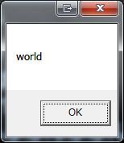

前回はパッケージのインストールに失敗しました。
謝罪
まずはじめに。 IronPython の使用を諦めることにしました。 理由はモジュールのインストールができなかったことです。 一番シンプルだと思っていた simplejson すらまともにできませんでした。 正確には、インストールはできましたが、いざ import simplejson すると、動かない。 他にも、
- CPythonと同じ方法でC言語ベースのライブラリと相互運用ができない
- 2017/03/11時点で、Issueの数が700越え。あまりにも利用者の声に応える余裕がない。
結局、ネット上で調べると、動かないという情報ばかり、でこれ以上貴重な時間を費やすことはできない、という判断に至りました。 4日以上使いましたが、本当に無駄骨に終わりました。
Introduction
なので、方針を変えます。 「.NETからPythonを使う」 という目的を達するなら、思いつく限り、
- Pythonをコマンドプロンプトで呼び出し、標準出力で結果を受け取り解析
- Pythonをコマンドプロンプトで呼び出し、ファイルで結果を受け取り解析
- Pythonで動作しているWebサービスのAPIを叩く
あたりでしょうか。 1,2番目は面倒ですし、なによりださいので、3番目を利用します。 Webサービスなら、WCFによって簡単に.NETから呼び出せます。 というのも、Pythonをコマンドプロンプトで呼ぶと、呼び出しのコストが大きいと思います。 試してみた限り、Pythonの起動は遅いです。おそらく必要なモジュールなどを読み込んでいるからだと思うのですが、無視できない間隔で待たされます。 なので、起動コストを無視するために、常に起動しっぱなしにして、必要なときに必要な演算結果を受け取る形式がベスト。 ですので、今回はPythonでシンプルなRESTfulサービスを作成し、C#アプリからアクセスします。 そのために軽量なWebフレームワークであるPythonモジュール Flask を使用します。 Flaskについては下記を。
また、使用するPythonはMinicondaを使用します。 今回のソースは下記になります

Python
Flaskインストール
さくっとインストールします。 下記に従うだけです。
1 | $ python -m pip install flask-restful |
以上でインストールは完了です。
動作確認
最小のRESTfulなアプリが下記ドキュメントにあるのでファイルに保存します。
1 | from flask import Flask |
以上のソースを下記で起動します。
1 | $ python Python.py |
Webブラウザで http://127.0.0.1:5000/ へアクセスすると、下記が表示されます。
1 | { |
jsonで返ってきています。 以上でFlaskのテストは完了です。
C#
SOAPであるならば、エンドポイントを参照して、クライアントクラス等の生成が自動でできますが、RESTにそんな便利機能はありません。
Microsoft.Net.Http
RESTful APIへのアクセスです。RESTful APIへのアクセスはライブラリを使って簡略化します。 幸いMicrosoft.Net.HttpというライブラリがあるのでNuGetで導入します。
Newtonsoft.Json
RESTful APIから返ってきたjsonの逆シリアライズをNewtonsoft.Jsonで実行します。 こちらもNuGetで導入します。
ソース
WPFです。Xaml側は省略します。 Xamlは、結果を表示するためのメッセージボックスを呼び出すButtonだけです。 ViewModelもButtonに対応するコマンドだけです。 まずは、先ほどのjsonに対するModelクラスです。
1 | using Newtonsoft.Json; |
次はViewModelです。
1 | using System; |
テスト
実際に実行してみます。 C#側を起動する前に、PythonでRESTサービス側を起動しておいてください。 ボタンを押下すると、REST APIのjsonを受け取り、そのjson唯一のメンバーである、Helloキーに対応する値をメッセージボックスで表示します。

{kind=link}
Conclusion
IronPythonが期待外れに終わった今、Pythonの既存資産を生かす方法として、Webサービス化は有用な手段です。 単純に結果を呼び出すだけならRESTful APIは簡単で魅力的です。
Source Code
https://github.com/takuya-takeuchi/Demo/tree/master/WPF.Python4